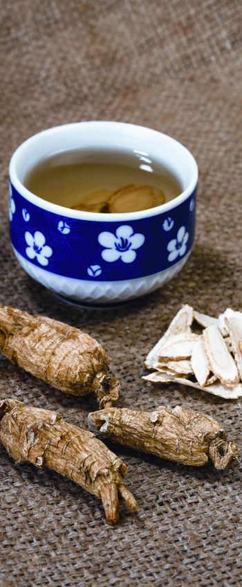
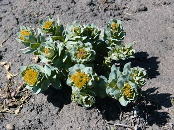
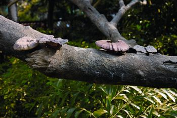

Sixteen years ago, Patricia L. Gerbarg, a Kingston, N.Y., psychiatrist, contracted Lyme disease. But as sometimes happens, her blood tests were negative, so the condition was not diagnosed for five years. By that time, she had severe chronic fatigue, painful joints, muscle weakness, balance problems, memory loss and impaired mental function. After her diagnosis, Gerbarg took antibiotics for nine months. “They helped, but I still felt weak, low in energy and mentally fuzzy.”
Then her husband, Richard Brown, a psychopharmacologist at Columbia University, learned of a Russian herb, Rhodiola rosea, which purportedly strengthened the whole body. He thought it might help - and it did. “Within 10 days,” Gerbarg recalls, “I felt better. After three months, my energy, memory and mental function were restored.”
Rhodiola and several other herbs are called “adaptogens.” The term was coined in 1947 by a Russian scientist, N.V. Lazarev, who was interested in substances that helped the body adapt to physical and emotional stress. Lazarev thought that adaptogens should:
Since that time, the term adaptogen has been generalized to include herbs that don’t necessarily boost energy or counteract stress, but still have a number of benefits including enhanced immune function, antioxidant action and physiological normalization. Unfortunately, in Western medicine the concept of adaptogens is still not widely known, and the idea remains controversial. “In the West, we’re not used to the idea that one drug - or herb - can have a broad range of physical and mental health benefits,” Gerbarg explains. But when you consider that stress has been linked to a host of other disorders, including depression, heart attacks, hypertension and increased susceptibility to infection, it’s easy to understand how one herb can have an all-encompassing, tonic effect.
For example, ginseng, another adaptogen, not only reduces stress-related hormones, but research shows it also improves stamina and relieves fatigue. Eleuthero, often called Siberian ginseng, improves stamina and enhances immune function, as do reishi mushrooms - another adaptogenic remedy. Ashwagandha, an Indian plant, helps decrease damage caused by stress, and reduces cholesterol and blood sugar levels. Schisandra berries can improve memory and aid digestion.
The dosage recommendations throughout this article assume you’re using typical extracts and formulations. When using a commercial product, follow the directions specified on the package. Adaptogens are meant to be taken as tonics, that is, over the long haul for the good of the whole body. For maximum benefit, adaptogens are often taken for at least three months, and while most people can take them daily without side effects, this isn’t true for everyone. If you experience any unusual symptoms while taking adaptogens, discontinue use or consult a knowledgeable health professional. To treat a specific condition, it’s also wise to consult an herbal professional.
Ginseng’s Latin name, Panax, comes from the same Greek root as our word, “panacea,” meaning all-healing. That’s not much of an exaggeration.
A great deal of research shows that ginseng significantly improves athletic performance and relieves fatigue. At the University of Chieti, Italian researchers tested 50 healthy male gym teachers, aged 21 to 47, on a treadmill before and after taking ginseng or a placebo. The herb group showed greater oxygen intake and improved stamina. A Japanese study showed that the herb helps relieve fatigue associated with menopause.
Ginseng also relieves the ravages of stress. Japanese researchers showed that the herb reduces the secretion of stress-related hormones. “Travel causes stress,” says Mark Blumenthal, executive director of the American Botanical Council, the nation’s leading medicinal herb education organization (see “Resources” below). “I’m on a plane almost every week, but I rarely get sick. I’ve taken ginseng for 20 years. I can’t prove that it’s keeping me healthy, but there’s compelling evidence that it helps the body deal with the kinds of stress I face.”
Ginseng also improves immune function. University of Southern California researchers report that, in vitro, the herb increases production of interferon, the body’s own antiviral compound. South Korean researchers discovered that in addition to boosting interferon and another important immune protein, interleukin-1, ginseng also increased the ability of white blood cells to devour germs.
Ginseng’s immune boost helps treat chronic bronchitis, which is common among smokers. Italian researchers treated 75 chronic bronchitis sufferers with antibiotics for nine days, then gave some of them ginseng (200 milligrams/day) in addition. Nine days later, the ginseng group’s lungs showed significantly fewer bacteria.
Ginseng’s immune-boosting action also appears to help prevent cancer. Researchers at the Korea Cancer Center in Seoul surveyed how much ginseng 4,634 Koreans took, then followed them for five years. Compared with those who didn’t take ginseng, those who took it regularly had a whopping 60 percent less risk of developing cancer.
Another Korean study showed that ginseng reduced blood pressure, a key risk factor for heart disease and stroke. A Russian animal study suggested that the herb also normalized hearth rhythm.
Ginseng also helps treat diabetes. University of Toronto researchers gave the herb (3 grams) to diabetics before a meal. Blood sugar typically rises after eating. But 40 minutes after eating, the ginseng group’s blood sugar was lower.
Want to get smarter? British researchers gave 20 middle-aged adults a battery of cognitive function tests. Then the participants took either a placebo or ginseng (200, 400 or 600 milligrams a day), shortly after which they were retested. The placebo group showed no change in brain power. But those who took ginseng showed significantly improved memory.
Ginseng can be grown in gardens, but the roots take seven years to reach harvest size, so supplements are probably your best bet. It causes no significant side effects, though caffeinelike jitters are possible. Those with high blood pressure are advised to avoid it, because compounds in the root may raise blood pressure, though evidence shows that it helps normalize blood pressure - it’s unclear which effect predominates. Consult your health care practitioner if you have high blood pressure and are considering using ginseng.
Eleuthero (Eleutherococcus senticosus) is often called “Siberian ginseng,” but it’s not a ginseng. True ginseng grows as a ground cover. Eleuthero is a shrub that grows to more than 6 feet tall in China and Russia.
Eleuthero has been shown to increase energy and stamina. University of Iowa researchers gave 76 people suffering chronic fatigue either a placebo or eleuthero. After two months, the eleuthero group reported significantly more energy. A review of several studies by researchers at the University of Sherbrooke in Quebec, Canada, concluded that the herb improved stamina.
Eleuthero also improves immune function. German researchers assessed the immune function of 36 people and then gave them eleuthero tincture (10 milliliters three times a day). After four weeks, T-helper cells, a key component of the immune system, showed a “drastic increase.” Eleuthero also increases production of interleukin-1 and -6, important immune proteins. A Russian study showed that eleuthero boosted the immune systems of people with cancer.
German scientists have documented eleuthero’s “strong antiviral” action. Russian researchers gave 53 children with colds either conventional treatment or an herbal preparation including eleuthero. The herb group recovered faster.
In addition, eleuthero helps the heart. A Polish study showed that it reduces LDL (“bad”) cholesterol, triglycerides (blood fats) and blood sugar, all risk factors for heart disease. It also helps prevent internal blood clots that trigger heart attacks (and most strokes). And a Russian animal study shows it helps normalize heart rhythm.
“Eleuthero is one of the top herbs I prescribe for chronic stress and stress-related conditions,” says acupuncturist and herbalist Christopher Hobbs. “Patients tell me it helps.”
However, side effects are possible: drowsiness, anxiety, irritability, headache and insomnia. Don’t take it if you’re pregnant, nursing, running a fever, or if you have high blood pressure.
Found in arctic areas of Europe and Asia, rhodiola (Rhodiola rosea) is a perennial succulent plant with a thick medicinal root. When cut, the root exudes a roselike fragrance, hence its Latin specific name, rosea, and one of its common names, rose root.
The Vikings used rhodiola to enhance their strength and stamina. But like eleuthero, it’s a recent addition to scientific herbalism. Russian military researchers began studying it in the 1960s, but that research was kept secret until the collapse of the Soviet Union in 1994. Since then, rhodiola research has been published in Western medical journals, and the herb has become available in North America, and even grown in Alberta, Canada (see photo in the Image Gallery).
Rhodiola has been proven to increase stamina. Belgian researchers gave 24 people either a placebo or rhodiola (200 milligrams). The herb group experienced a significant increase in stamina.
Several Russian studies showed that rhodiola helped students perform better under academic pressure, “Rhodiola is the best adaptogen for mind and memory problems,” Hobbs says. “I prescribe it for people who complain of fuzzy memory. They’ve reported good results.”
Rhodiola also reduces stress. According to a comprehensive review publishedin HerbalGram, the journal of the American Botanical Council, it reduces levels of stress-related hormones, and boosts levels of the body’s own feel-good compounds, endorphins.
Furthermore, rhodiola strengthens the heart and cardiovascular system. A Chinese animal study showed that it lowered blood pressure and slowed heart rate, while Russian studies found that it normalizes heart rhythm and prevents stress-induced heart damage. It also improves blood flow through the brain, which helps prevent stroke.
Rhodiola is a “powerful antioxidant,” Gerbarg says. Antioxidants help prevent the cell damage at the root of cancer. Studies show that the herb reduces cell mutations associated with cancer and enhances the body’s ability to repair cancer-related DNA mutations. Russian researchers have found that rhodiola improves the immune function of people with bladder cancer and reduces recurrences. Finally, the herb virtually eliminates the toxicity of one widely used chemotherapy drug, Adriamycin (Doxorubicin).
Gerbarg, co-author of The Rhodiola Revolution (2004), has used rhodiola to treat more than 150 people suffering from severe depression. “In many cases adding rhodiola to their treatment increased their energy and allowed them to experience more enjoyment in life.”
Rhodiola also protects the liver, helping the organ recover from exposure to various poisons, according to Russian and Korean animal studies.
Since her Lyme disease diagnosis, Gerbarg has taken rhodiola daily (400 to 450 milligrams), and has experienced no side effects. However, because it has stimulant action, jitters and anxiety are possible. Gerbarg cautions against using commercial preparations that include caffeine, since they may be overstimulating.
Chinese medicine considers schisandra (Schisandra chinesis) to be a balancing herb, Hobbs says, because it contains all five flavors: sweet, sour, salty, bitter and spicy. Asian animal studies showed that it improves memory. The herb also protects the liver from a variety of toxic agents, and is used to treat respiratory and digestive ailments. Schisandra causes infrequent side effects.
Ashwagandha (Withania somnifera) is called “Indian ginseng,” because its effects are similar to Panax ginseng. Several Indian animal studies showed ashwagandha improves stamina and reduced the damage caused by various stressors. It stimulates the immune system and has powerful antioxidant action. Antioxidants reduce risk of cancer and heart disease. Indian animal studies show intriguing cancer-preventive action.
Indian researchers also gave ashwagandha to diabetics with high cholesterol. A month later, cholesterol and blood sugar levels were significantly lower. Finally, the herb has some antidepressant action. Side effects are rare in recommended amounts, but large doses may cause stomach distress, diarrhea and vomiting. Pregnant and nursing women should not use it.
Called the “mushroom of immortality,” Chinese medicine considers reishi mushrooms (Ganoderma lucidum) a qi (life force) tonic and longevity promoter. “It can help in the treatment of fatigue, respiratory complaints, cancer, heart disease and liver ailments,” says San Francisco Chinese medicine practitioner Efrem Korngold.
Considerable research shows that reishi mushrooms enhance immune function. Korean studies showed that they have antibacterial and antiviral action. Reishi is also a potent antioxidant. Studies in Japan and at the Methodist Research Institute in Indianapolis, Ind., showed the mushroom suppresses the growth of several cancers: breast, prostate, colon, nose, throat and leukemia. A Chinese study showed that the mushroom can prevent the internal blood clots that trigger heart attack. The herb also reduces cholesterol and blood pressure. A Beijing University animal study showed it reduced blood sugar.
Reishi may cause dizziness, stomach upset, skin irritation, diarrhea or constipation, and interfere with blood clotting. Pregnant and nursing women should not take it. Use reishi in consultation with a Chinese medicine practitioner. It’s possible to grow reishi mushrooms in your yard or garden on tree stumps. (See “Resources,” below, for more information.)
American Botanical Council (ABC); a leading source of medicinal herb information; 512-926-4900
Fungi Perfecti; order mushroom cultures or supplements, and learn more about growing fungi; 800-780-9126
Garden Medicinals and Culinaries; order ashwagandha seeds; 434-964-9113
Rich Farm Garden Supply; order schisandra seeds; 765-584-2500
|
 ISTOCKPHOTO/CHEN CHIH-WEN Ginseng’s Latin name, Panex, comes from the same Greek root as the word “pancea,” meaning all-healing - and that’s not much of an exaggeration. |
 ARRGO Rhodiola |
 ISTOCKPHOTO/EXXORIAN Reishi Mushroom |